The documentation site: figures
Figures for engine-site.md, the design of the engine's public documentation site. Each figure is a self-contained HTML page (no scripts, no external requests) with a PNG capture. The pages follow the reader's light or dark setting; the captures show the theme named in the caption.
The captures set text in Inter, as the built site will. The HTML pages use Inter when it is installed and the system font otherwise, because no font file is committed with this design. The picture in the guide and home figures is a real render by @photivra/engine 2.27.0; every other value is taken from the repository at 2.27.0.
Home
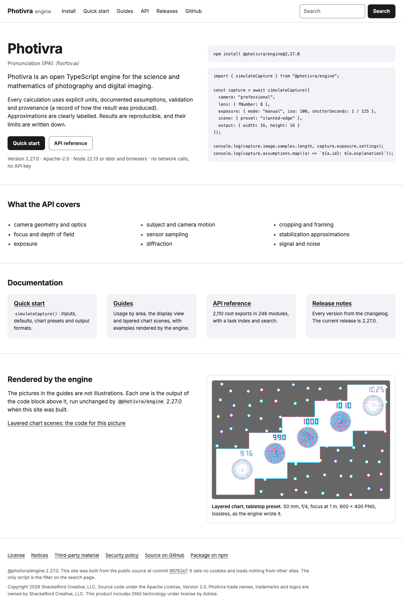
site-home: light, 1280 px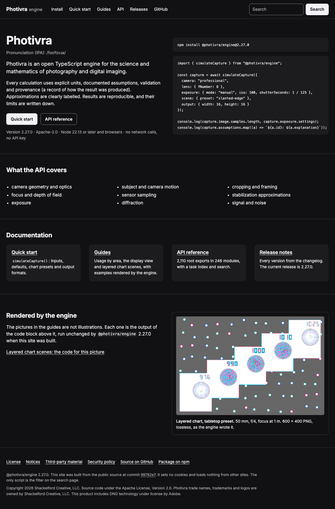
site-home-dark: dark, 1280 px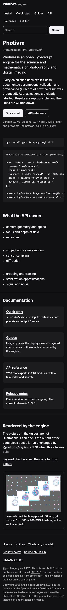
site-home-phone: dark, 390 pxAPI reference page
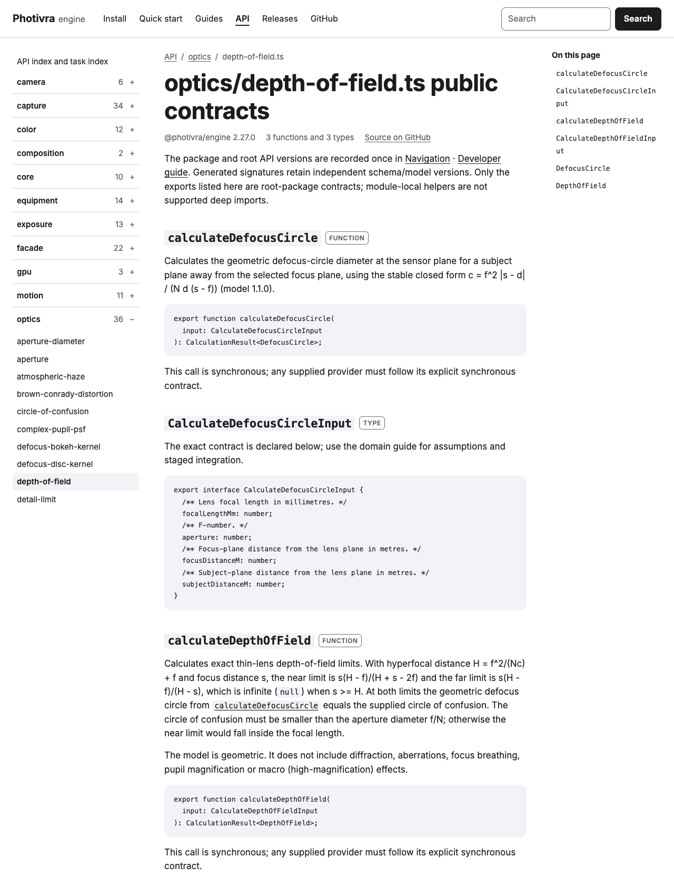
site-api: light, 1280 px (top of the page)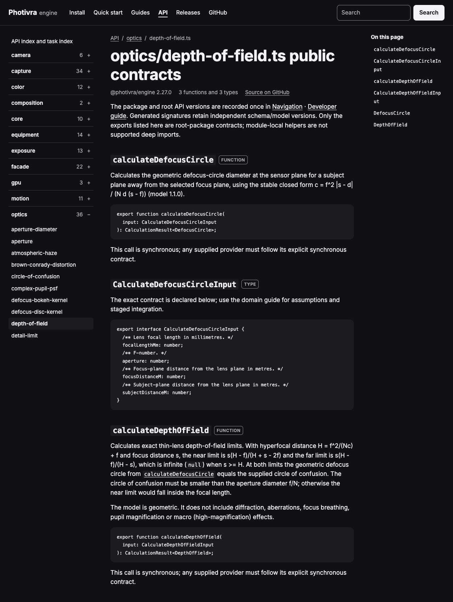
site-api-dark: dark, 1280 px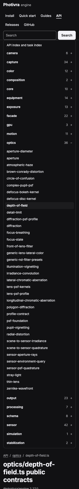
site-api-phone: dark, 390 pxSearch
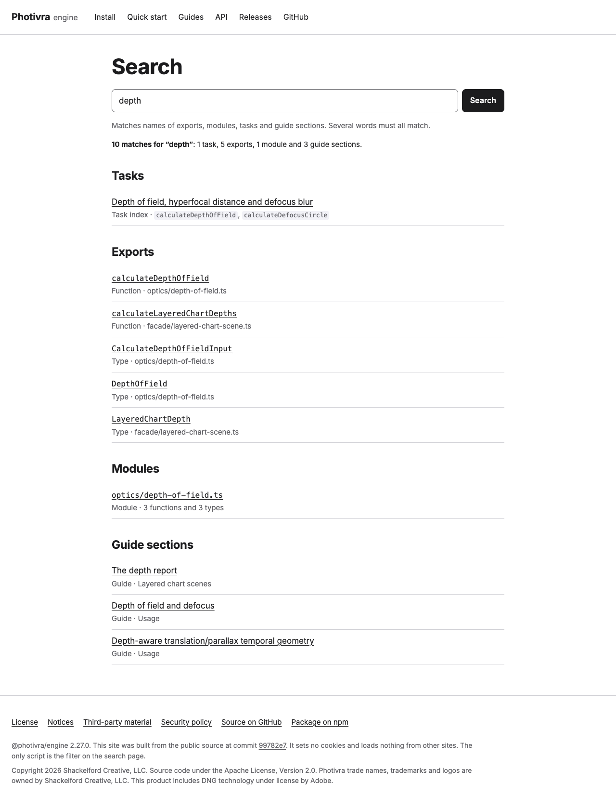
site-search: results for “depth”, light, 1280 px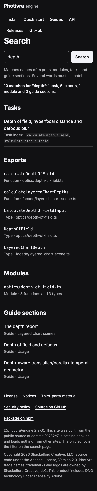
site-search-phone: dark, 390 px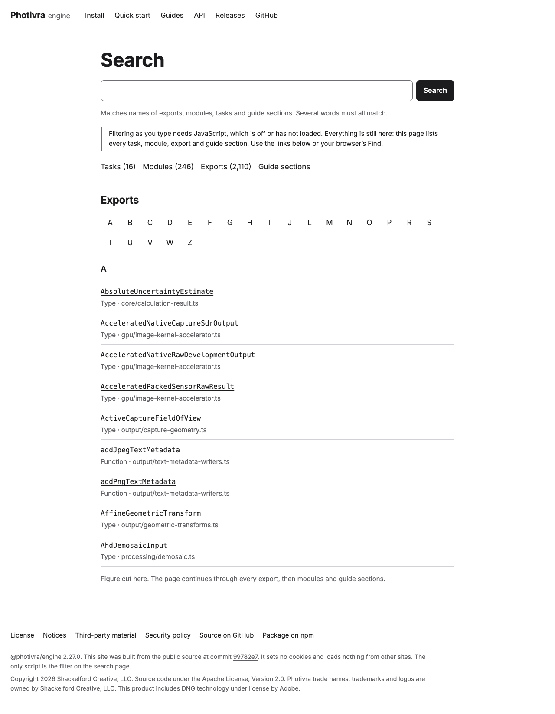
site-search-index: the same address without JavaScript, light, 1280 pxGuide with a rendered example
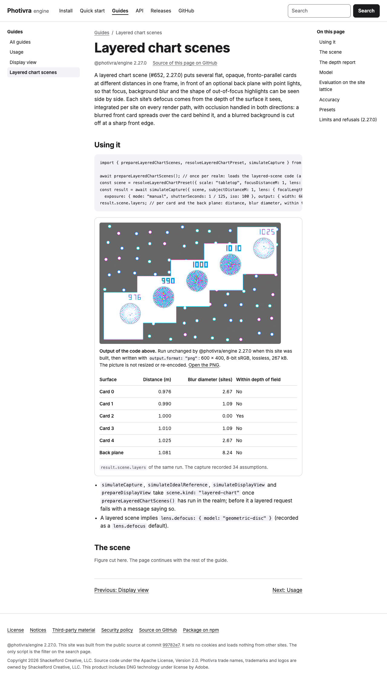
site-guide: light, 1280 px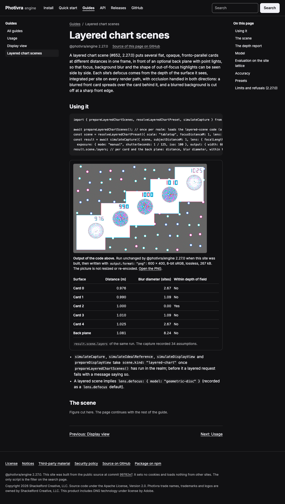
site-guide-dark: dark, 1280 px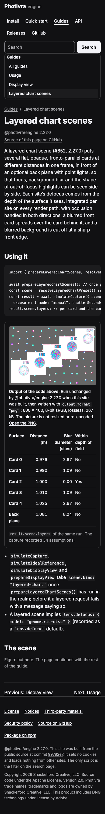
site-guide-phone: dark, 390 pxRelease notes
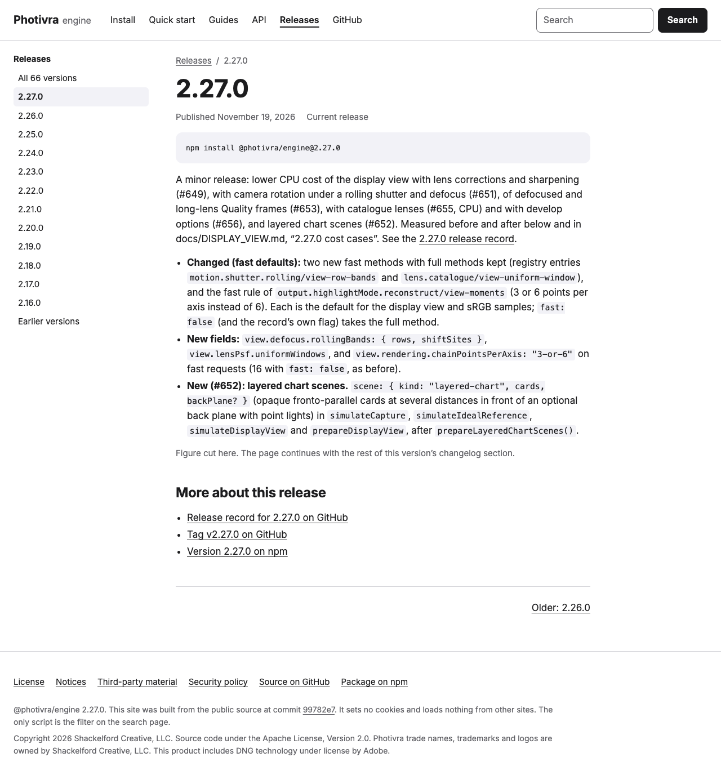
site-release: light, 1280 px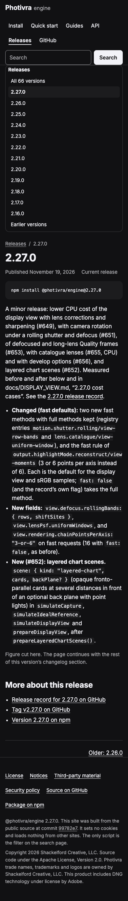
site-release-phone: dark, 390 pxNot found
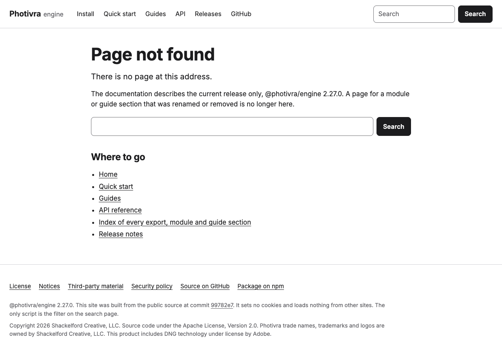
site-404: light, 1280 px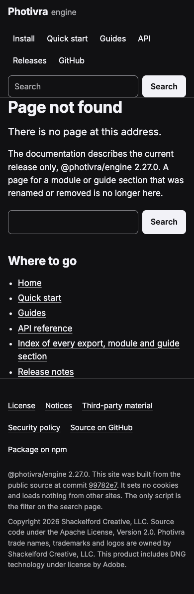
site-404-phone: dark, 390 px